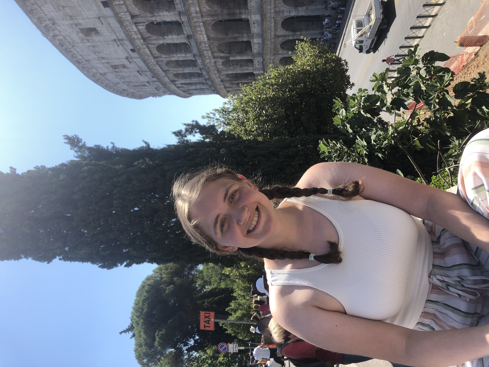

PhD Student · Robotics & AI
Julia López Gómez
I'm a second-year PhD student in Robotics and AI at the Edinburgh Centre for Robotics (CDT-D2AIR), supervised by Dr Steve Tonneau across the University of Edinburgh and Heriot-Watt University. Before this I graduated from Edinburgh with an Integrated Master of Informatics (MInf), First-Class Honours.
Research
Representations of Reachable Behaviour for Planning in Long-Horizon Robotics Tasks
I work on long-horizon robot motion and manipulation planning. A robot may already have controllers, policies, and skills that work well on their own, but it still has to work out when each one can be used and how to chain them together into a longer task. My thesis asks how to represent what each behaviour can actually reach, so that a planner can reuse and compose them.
- Long-horizon manipulation
- Reachability representations
- Controller & skill composition
- Optimisation-based planning
News
- Selected to attend the 1st IEEE RAS Summer School: Decision-Making for Cognitive Robots in Germany.
- Started my second year of the PhD program, CDT-D2AIR.
- Presented "Manipulation Planning with Convex Decompositions of C-free and NLP-Sampling" at a School of Informatics IPAB workshop.
- Presented a poster and project pitch at the ROMANDIC Winter School in Kranjska Gora, Slovenia, with workshops and mini-projects on robot learning and manipulation.
- Started my PhD in Robotics and AI within CDT-D2AIR, Edinburgh Centre for Robotics.
- Graduated from the University of Edinburgh with an Integrated Master of Informatics, First-Class Honours.
- Completed the MCTS for Robotics Manipulation voluntary project with LAAS-CNRS and NYU.